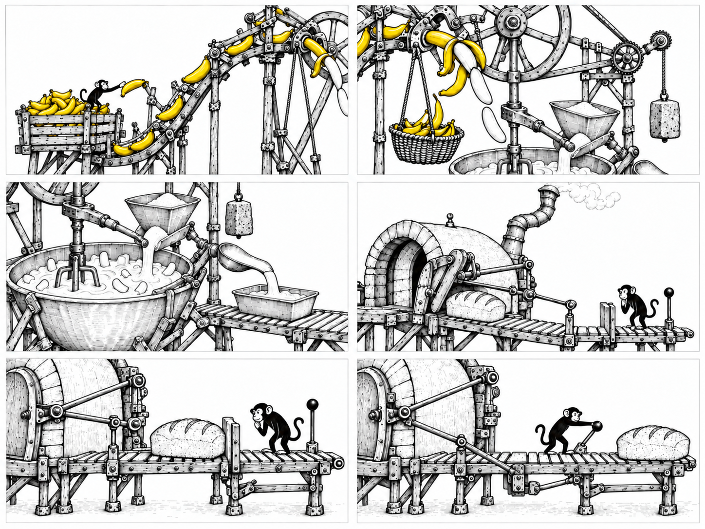
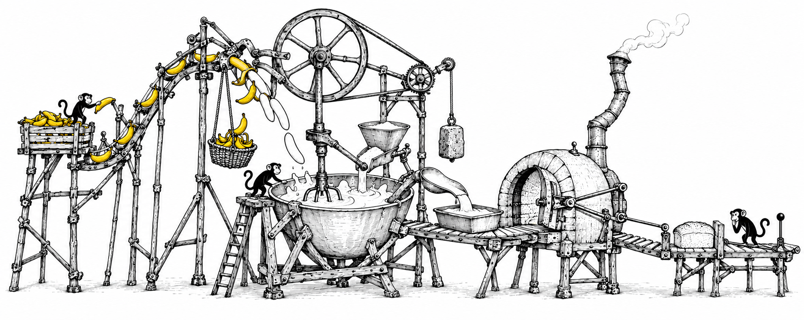

01 / 0–2s
Arrival
Yellow-skinned bananas climb to the peeling rig. A tiny supervisor checks the feed.
The Spotted Ape / Stage 1 / New editorial illustration
A miniature banana-bread factory, completely redrawn as an eccentric pen-and-ink invention. Tiny workers inhabit the apparatus; one deliberate inspection controls the final release.
Static artwork for review. New raster art-direction specimens made with the built-in image generation tool. The homepage and Stage 2 have not been changed.
01 / The new full-width composition

02 / Mobile composition
The mobile drawing brings the incoming batter, oven and final stop together. It retains the tall overhead drive and hanging skin basket. One very small inspector waits beside the loaf.
The preview at right is a 375px viewport with 335px artwork. The inspector is approximately 18–20px tall. On a narrower screen the preview scales to fit.
Open the mobile display specimen ↗
03 / Six-frame storyboard
A proposed 14-second cycle. These are detail framings of the same world, showing material and mechanism changes. Character scale for the website is established in the full desktop and mobile specimens above.

01 / 0–2s
Yellow-skinned bananas climb to the peeling rig. A tiny supervisor checks the feed.
02 / 2–4s
The fork opens the yellow skin. White fruit drops towards the bowl; the skin falls into its suspended basket.
03 / 4–7s
The belt-driven beater mixes the white fruit and batter. A curved ladle fills the waiting tin.
04 / 7–10s
The linked oven door opens. A monochrome loaf moves onto the short inspection track.
05 / 10–12s
The stop stays closed. The inspector leans towards the loaf, with its hand away from the upright handle.
06 / 12–14s
The inspector operates the tilted lever. The stop lowers beneath the track; the loaf passes it.
View the complete storyboard without captions ↗
The drawings establish the narrative. They are not registered animation keyframes or a validated mechanical rig. Small upstream processes are intended to continue during the two-second inspection.
04 / Why the visual language changed
The previous composition rested on a straight chassis with geometric housings. This one rises around a peeling rig, a suspended basket and an oversized drive wheel, then falls into a low bowl before reaching the crooked oven.
Uneven trestles, curved connections, varied pen lines and selective hatching give it the character of an inventor’s drawing. Humour comes from the elaborate apparatus used to bake an ordinary loaf.
The reference study drew principles from Heath Robinson’s mechanical imagination and Sempé’s understated drawing. The original composition uses tiny workers and open space; it does not reproduce a reference artwork.
Only banana skins carry warm yellow. The white fruit, batter and bread stay part of the monochrome drawing.
Read the specific reference observations ↗The comparison shows the previous and new drawings at thumbnail scale, then in fixed desktop and mobile display sizes. All previous design files are preserved.
Open before / after comparison ↗ · Review decisions and deliverables ↗ · Generation prompts ↗
Review the drawing language, composition, tiny worker scale, mobile view and inspection sequence. Stage 2 artwork preparation and animation await approval.